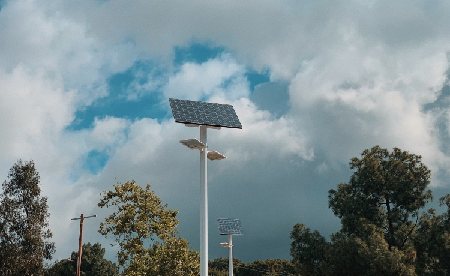

Nos meados do fim da década de 1950, a NASA, uma agência governamental Estado Unidense, lança ao espaço o primeiro satélite com pequenas células fotovoltaicas, o “Vanguard I” utilizava a energia captada pelos painéis solares para alimentar seu sistema e para o funcionamento dos transmissores de rádio, a energia captada e armazenada pelo sistema fotovoltaico fez com que o satélite permanecesse com comunicação durante 6 anos. Tal feito evidenciou já naquela época o poder e a infinidade de aplicações dos painéis fotovoltaicos, impulsionando assim os investimentos em cima dessa tecnologia, de modo que nos dias de hoje quase todos os satélites espaciais contém painéis solares. Além do que, esse fato histórico incentivou o estudo e aplicações de diferentes sistemas fotovoltaicos pelo mundo, os quais são classificados principalmente em dois tipos; conectados a rede e isolados.
Sistema conectado a rede (On Grid)
Esses sistemas possuem a tecnologia mais recente e inovadora a respeito de energia solar. Tal método não armazena energia, abrindo a possibilidade da injeção do excedente na rede elétrica, por meio da utilização de inversores , componentes que transformam corrente contínua em corrente alternada. Criando assim o que é chamado de “Sistema de créditos”, o qual após o gerador ao injetar seu excedente de energia na rede local ganha créditos que podem ser usados tanto na sua unidade consumidora ou em outras unidades consumidoras, dentro de um prazo de 60 dias. Como principal exemplo de sistema On Grid, temos as aplicações residenciais.
Sistema isolado (Off Grid)
Já os sistemas isolados tem como caracteristica principal não ser conectado na rede elétrica, o que o torna autonomo e faz com que a suas aplicações sejam quase infinitas, embora seja usado principalmente para propósitos locais e expecíficos. Alem do que, ao contrario do On Grid, o Off Grid possui um método de armazenamento em baterias da energia gerada. Como exemplo do sistemas Off Grid, temos as aplicações abaixo:
Imagem de um sistema Off Grid em um poste
Imagem de um sistema Off Grid na área rural
A utilização dos paineis solares surgiram com o sistemas isolados, para facilitar a geração de energia e locais específicos e de difícil acesso. Ao pensar nisso o governo criou um programa chamado “LUZ PARA TODOS”, que tem como finalidade levar energia para moradores da zona rural que não possuem o acesso a energia elétrica, seja por localização geográfica ou limitação econômica, uma vez que a instalação de até 50kV é gratuita. A imagem abaixo do Ministério de Minas e Energia evidência os feitos já atingidos pelo programa, desde a sua criação.